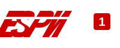
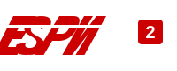
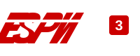

Fútbol Libre
Fútbol Libre es la plataforma deportiva líder para seguir en directo los partidos de hoy en vivo, con horarios sincronizados al instante y la guía oficial de canales deportivos en calidad HD.
Sigue la cobertura completa del fútbol de Argentina, México, España, Perú, Colombia, Chile y Uruguay, además de las mejores competiciones de clubes europeos y selecciones internacionales.
En Fútbol Libre y Pelota Libre consultas en un solo lugar la cartelera diaria, la hora exacta según tu país y las alternativas de transmisión deportiva oficial sin interrupciones.
Agenda deportiva de hoy
Canales deportivos en vivo



Preguntas Frecuentes sobre Fútbol Libre y Pelota Libre TV
¿Qué es Fútbol Libre TV y cómo funciona la agenda deportiva?
Fútbol Libre TV es una guía y portal deportivo diseñado para consultar los partidos de hoy en vivo, horarios locales y la cartelera completa del fútbol mundial. En nuestra plataforma reunimos las señales oficiales de fútbol online y tv por internet para que sepas exactamente quién juega hoy, a qué hora empiezan los encuentros y qué canal transmite cada torneo sin complicaciones.
¿Cómo ver fútbol online gratis y consultar los partidos de hoy?
Para ver fútbol online gratis de forma informativa, simplemente accede a la sección de Agenda deportiva de hoy. Allí encontrarás la lista de partidos programados para la jornada organizados cronológicamente. Al hacer clic en cualquier encuentro podrás ver los canales disponibles (como DSports HD, ESPN, Fox Sports o Liga 1 MAX) junto con las alternativas de transmisión en calidad Full HD.
¿Qué señales y canales deportivos están disponibles en Pelota Libre TV?
En Pelota Libre TV y Fútbol Libre puedes consultar la programación de los canales deportivos más solicitados de América Latina y España: DSports (Directv Sports Online y DSports 2), ESPN 1, ESPN 2, ESPN 3, Fox Sports, Liga 1 MAX en vivo para el fútbol peruano, Gol Perú, TUDN y Telemundo.
¿Cuáles son las diferencias frente a portales como Roja Directa, Pirlo TV o Promiedos?
A diferencia de portales tradicionales como Roja Directa, Pirlo TV o sitios de estadísticas como Promiedos y Mis Marcadores, Fútbol Libre Full HD ofrece una experiencia optimizada para dispositivos móviles y Smart TV, libre de redirecciones invasivas y con sincronización en tiempo real de horarios locales para que no te pierdas ningún clásico.
¿Puedo sintonizar partidos de Argentina, México y torneos internacionales?
Sí. Contamos con secciones especializadas para Fútbol Libre Argentina (Liga Profesional, Copa Libertadores, Boca Juniors, River Plate y San Lorenzo) y Fútbol Libre México (Liga MX con América, Chivas y Cruz Azul). Asimismo, cubrimos torneos europeos de élite como la UEFA Champions League, LaLiga y la Premier League.
Partidos de hoy en vivo y cartelera de fútbol online
En Fútbol Libre organizamos los partidos de hoy en vivo para que los aficionados de toda Hispanoamérica tengan acceso inmediato a la programación deportiva más completa. Si te preguntas qué partidos hay hoy o a qué hora juegan tus equipos predilectos, nuestra cartelera diaria se actualiza de manera continua con los horarios adaptados a cada país y las señales autorizadas para cada evento.
Fútbol Libre Argentina: Liga Profesional y Clásicos
Para los seguidores del fútbol sudamericano, la sección de Fútbol Libre Argentina es el punto de referencia indispensable. Revisa el fixture de la Liga Profesional Argentina, la Copa de la Liga y los partidos decisivos de clubes históricos como Boca Juniors, River Plate, Racing Club, Independiente y San Lorenzo. Entérate de los horarios oficiales del Superclásico y de la participación argentina en la Copa Libertadores y la Copa Sudamericana.
Fútbol Libre México: Toda la pasión de la Liga MX
En Fútbol Libre México (y fútbol libre méxico) ofrecemos el seguimiento exhaustivo de la Liga MX, la Liga de Expansión y la Leagues Cup. Consulta fechas, horarios y canales de transmisión para los partidos de clubes emblemáticos como Club América, Chivas de Guadalajara, Cruz Azul, Pumas UNAM, Tigres UANL y Rayados de Monterrey, además de los encuentros de la Selección Mexicana en torneos oficiales.
Fútbol de Sudamérica: Perú, Colombia, Ecuador y Chile
Nuestra cobertura abarca las ligas más competitivas del continente. Sigue la Liga 1 MAX en vivo y Gol Perú con los encuentros de Alianza Lima, Universitario de Deportes y Sporting Cristal; la LigaPro de Ecuador con Barcelona SC y LDU Quito; el Campeonato Nacional de Chile con Colo-Colo y Universidad de Chile; y los mejores compromisos del fútbol colombiano en directo.
Torneos Europeos: Champions League, LaLiga y Premier League
Disfruta de la agenda internacional más prestigiosa. Fútbol Libre TV HD y Pelota Libre recopilan la cartelera semanal de la UEFA Champions League, la UEFA Europa League, LaLiga de España con Real Madrid y Barcelona, la Premier League inglesa, Serie A de Italia y la Bundesliga alemana. Consulta las opciones de transmisión para ver fútbol libre en vivo con la mayor fluidez y claridad.
Guía de Canales Deportivos en HD por Internet
Nuestra guía de canales deportivos en vivo te permite conocer la señal oficial que emite cada disciplina: DSports HD (Directv Sports Online y DSports 2), ESPN 1, ESPN 2, ESPN 3, Fox Sports, Telemundo, TyC Sports y TNT Sports. Accede a tv por internet desde cualquier computadora, tableta o smartphone sin necesidad de descargas adicionales.
Guarda en tus marcadores a Fútbol Libre y Pelota Libre TV para consultar siempre la agenda deportiva de hoy, resultados en vivo y los canales oficiales con la mejor calidad digital.